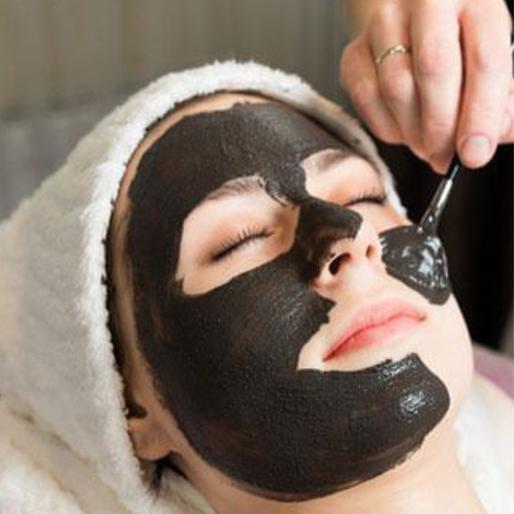

|  | BERIKUT ADALAH MANFAAT-MANFAAT YANG BISA DIDAPAT DARI PEMANFAATAN ARANG PADA KECANTIKAN |
Sekilas banyak orang yang menganggap jika arang termasuk bahan yang kotor karena warna dan penampilannya. Namun, di balik tampilan tersebut, ada activated charcoal atau arang aktif yang mampu memberikan manfaat kecantikan untuk kulit. Arang aktif memiliki kekuatan adsorpsi atau proses penyerapan seperti busa dan sifatnya yang tidak aktif bereaksi. Namun, arang yang dimaksud di sini bukanlah arang yang biasa digunakan untuk memanggang makanan atau arang bara api, melainkan karbon atau zat arang yang dihasilkan dari bahan-bahan alami.
Berikut 9 manfaat arang untuk wajah yang perlu diketahui.Kulit yang memiliki pori-pori besar bisa menyebabkan kotoran, polusi, dan zat kimia dari kosmetik menumpuk di kulit sehingga komedo mudah sekali muncul. Nah, manfaat arang untuk wajah bisa membantu memperkecil pori-pori besar ini. Gunakan saja masker wajah alami dari arang yang dipercaya mampu mengangkat semua kotoran dalam pori-pori sekaligus mengecilkan pori-pori Anda.
2.) MELEMBUTKAN KULITPenggunaan riasan dan paparan kotoran dari polusi dan debu akan menimbulkan efek negatif pada kulit. Salah satunya, kulit menjadi kasar. Anda bisa menggunakan arang untuk memperbaiki tekstur kulit, membuatnya lebih lembut serta lebih lentur.
3.) MENGATASI KULIT KUSAMPolusi udara seperti asap rokok, asap kendaraan bermotor, debu jalanan, dan radiasi sinar ultraviolet bisa mengakibatkan kulit wajah terlihat kusam. Bentengi kesehatan kulit Anda dengan mengoleskan masker arang. Di dalam arang terdapat karbon aktif yang bias mengangkat seluruh polutan tersebut.
4.) EXFOLIATOR ALAMIKulit yang kering bisa membuat kulit wajah terlihat kusam dan tampak tidak terawat. Salah satu cara mengatasinya adalah dengan menggunakan masker arang. Tekstur arang merupakan exfoliator yang alami karena bisa membantu menghilangkan sebum dan sel kulit mati dari wajah. Di dalam arang juga terdapat sifat antimikroba yang membantu mencegah infeksi kulit.
5.) MENGHILANGKAN WHITEHEADWhitehead merupakan jenis jerawat yang terbentuk ketika bakteri, minyak, dan sel kulit mati menyumbat pori-pori. Adanya whitehead bisa membuat kulit tampak bergelombang dan tidak sehat. Anda bisa menggunakan arang untuk membantu menghilangkan whitehead.
6.) MENGURANGI KERIPUTManfaat arang untuk wajah selanjutnya adalah bisa mengurangi kulit yang keriput, terutama jika Anda rajin memijat kulit wajah Anda dengan masker wajah alami dari arang. Pijatlah wajah secara melingkar untuk melepaskan ketegangan antara garis penuaan. Cara ini bisa meningkatkan sirkulasi darah dan mengurangi tanda keriput.
7.) MENYEIMBANGKAN PRODUKSI MINYAK DI WAJAHManfaat arang untuk wajah lainnya adalah mampu menyeimbangkan produksi minyak di wajah, terutama Anda yang memiliki jenis kulit yang berminyak. Masker arang terutama akan membantu membuat wajah tidak kering dan menyeimbangkan produksi minyak hingga setelah penggunaan.
8.) MENGHILANGKAN KOMEDOBiasanya komedo muncul pada area T-zone (dahi, hidung, dagu) pada wajah. Untuk menghilangkannya, Anda dapat menggunakan masker arang di area yang terdapat komedo. Gunakanlah masker arang ini setiap minggu untuk mendapatkan kulit bebas komedo.
9.) MENYAMARKAN NODA JERAWATManfaat arang untuk wajah yang tak kalah penting adalah dipercaya dapat membantu menyembuhkan jerawat dan menghilangkan noda hitam bekas jerawat. Hal ini berasal dari sifat anti radang yang terkandung pada arang sehingga membuatnya bermanfaat untuk melawan jerawat.